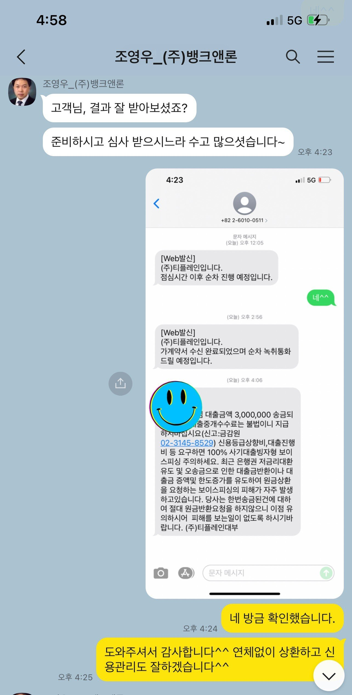
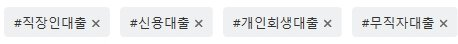

[개인회생자대출] 조영우 이사와의 대출 후기

개인회생 60회차 납부 후 면책결정공고 상태에서 진행하게 되었습니다.
신용점수가 100점이고 평균적으로 회복하려면 1~2달 이상의 시간이 필요한 상황이었습니다.
현재 대학교 연구보조 프리랜서 상태로 4대보험 미가입에 월 소득 100만원으로 대출승인이 났습니다.
기대출 0건, 개인회생 면책, 통신3사 사용 그리고 개인회생 인가 후 태강대부에서 300만원 대출을 받고 완납했던 기록들을 바탕으로 믿고 승인해주신것 같습니다. 잠시 소득이 감소했지만 앞으로 더 열심히 경제활동하며 상환하겠습니다. 조영우 이사님 감사합니다^^

[출처] 조영우 이사와의 대출 후기 (뱅크앤론 (직장인대출,개인회생자대출,개인회생대출 등..)) | 작성자 스누삐90